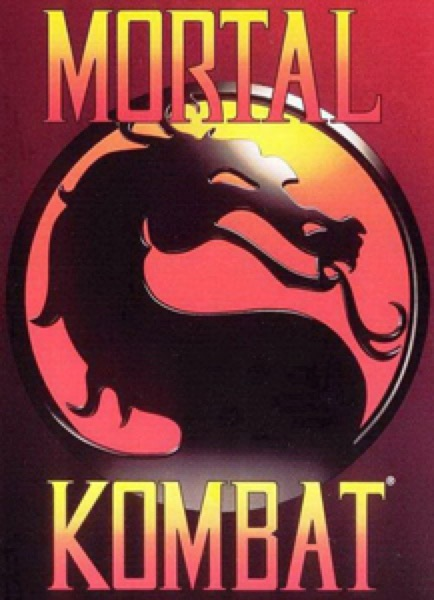

Fighting · 1992
Mortal Kombat
Digitised actors, spinal columns, and the rating board it summoned into being.

Cover: Wikipedia: Mortal Kombat (1992 video game)
Facts
- Released
- 1992-10-08
- Genre
- Fighting
- Category
- Fighting
- Platforms
- Arcade, Nintendo, PC, PlayStation, Retro home computer, Sega, Xbox
- Developers
- Midway Games
- Publishers
- Midway Games